Prints
Installations
Fourth Planet, Full Circle.
site specific installation for private residence in Hobart, Tasmania.
cotton and acrylic yarn, nails, and screws.
Study for a Trellis
Temporary site specific installation at Towson University.
cotton and acrylic yarn and nails ·
Urban dictionary series
Nameless, faceless Internet identities that act unchecked by personal or moral accountability provide the source of inspiration for my series, “Urban Dictionary“. It takes its raw material from two divergent sources. One of these are the crude definitions for sex acts from the popular website Urbandictionary.com. These explicit and misogynistic “jokes” demean and dehumanize intimacy, characterizing it in terms similar to video game conquests. The other source is used prom dresses. These garments symbolize the excessive lengths taken to fulfill the overly romanticized expectations inherent in our cultural tradition of prom night. In the United States, prom night is one of the most anticipated events in a girl’s high school career; and of recent tradition, is also a night when they lose their virginity. These dresses symbolize teenage girls’ visions of love and sexuality.
Both mindsets represent an immaturity of sorts, but the juxtaposition of the two provide the ingredients for questions regarding the ethics of humor. The dresses are deconstructed and reused to make tapestries and objects which incorporate in their design the title of the joke and the number of assenting “thumbs up” and dissenting “thumbs down” votes provided on the website.
Four of the pieces in the series are pictured below:
Angry Dragon
Prom dress, thread, embroidery floss, and votes referring to Mason’s definition on UrbanDictionary.com
Jelly Donut
Prom dress, thread and votes referring to user Sikwill’s definition on UrbanDictionary.com
Donkey Punch
Prom dress, thread, polyester fiberfil, and votes referring to user Mh’s definition on UrbanDictionary.com
Angry Pirate
Prom dress, thread and votes referring to j money’s definition on UrbanDictionary.com
Light Sensitive Construction
Embroidery and Painting
 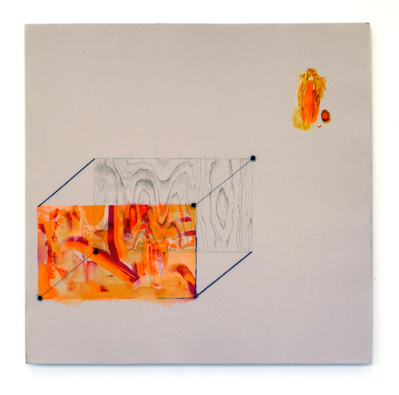
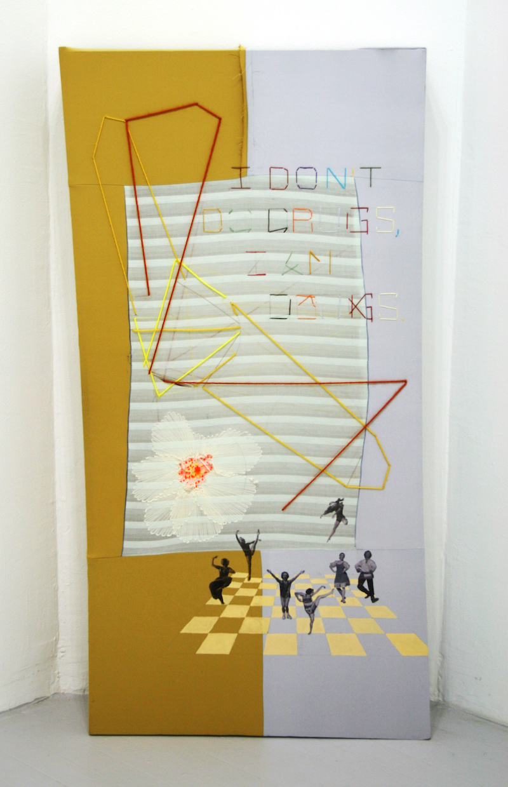
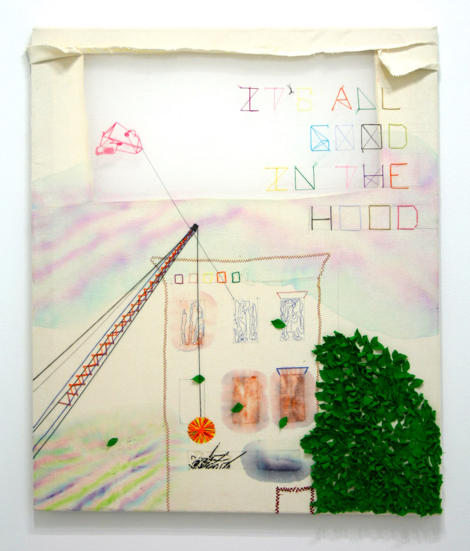
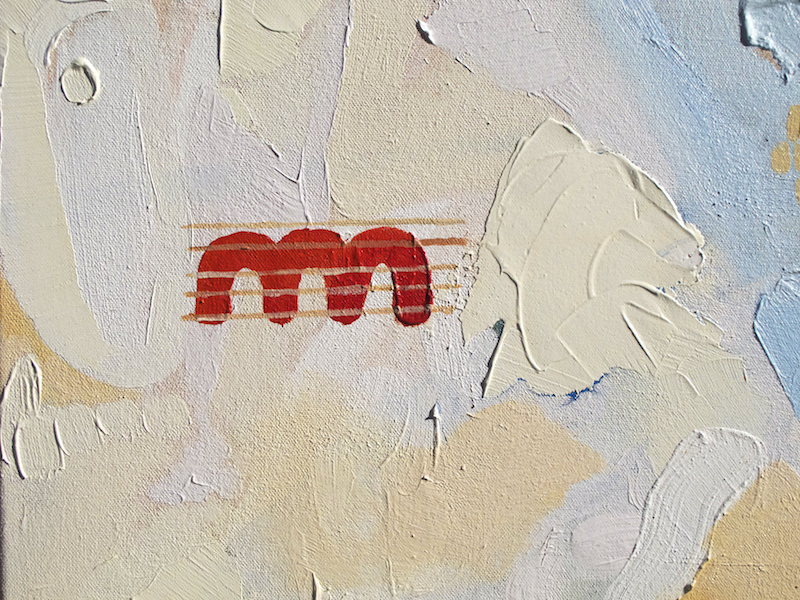
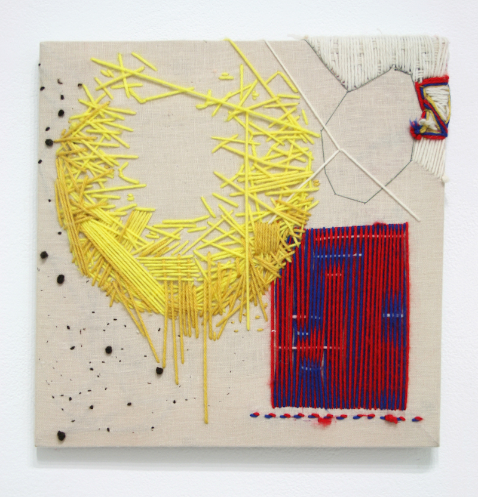
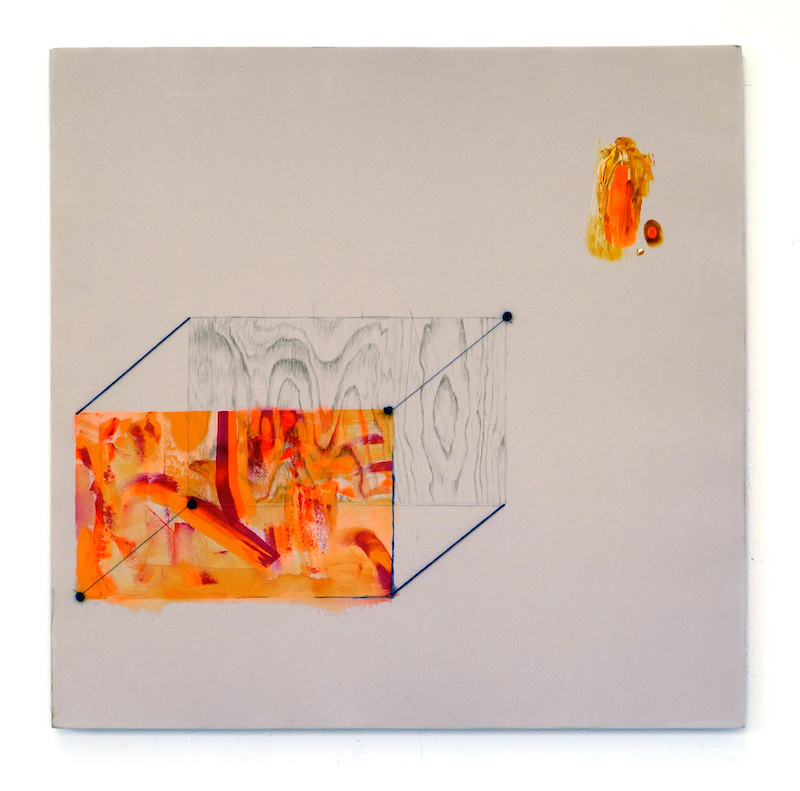
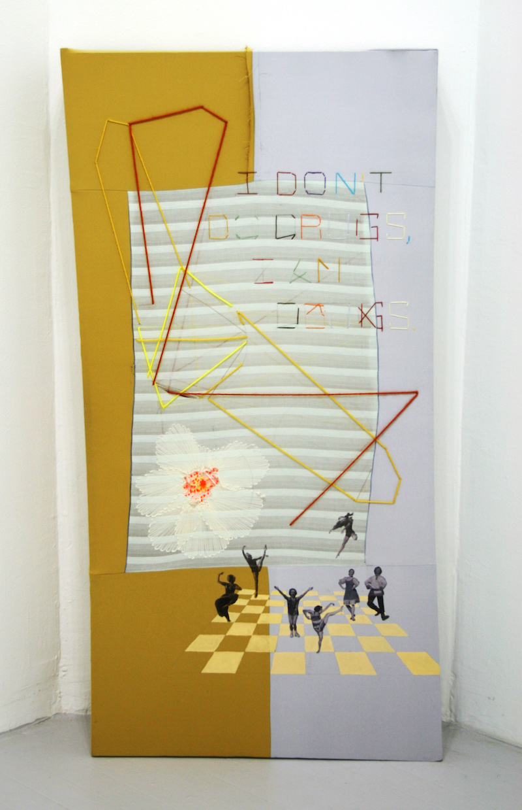
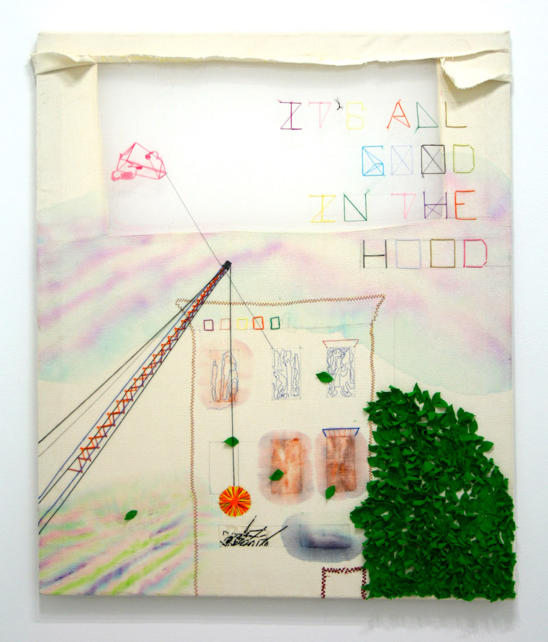
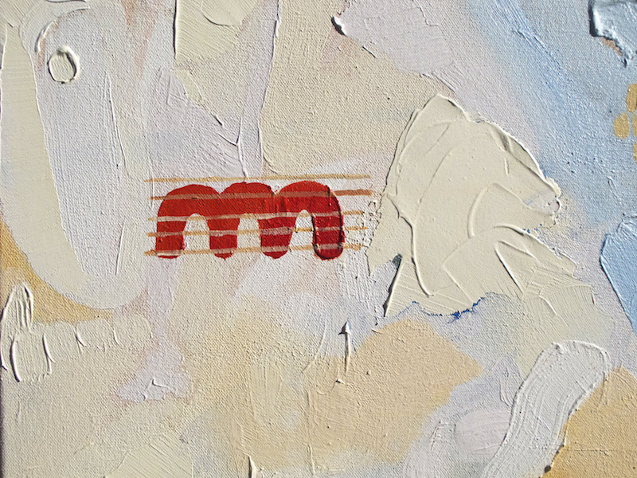
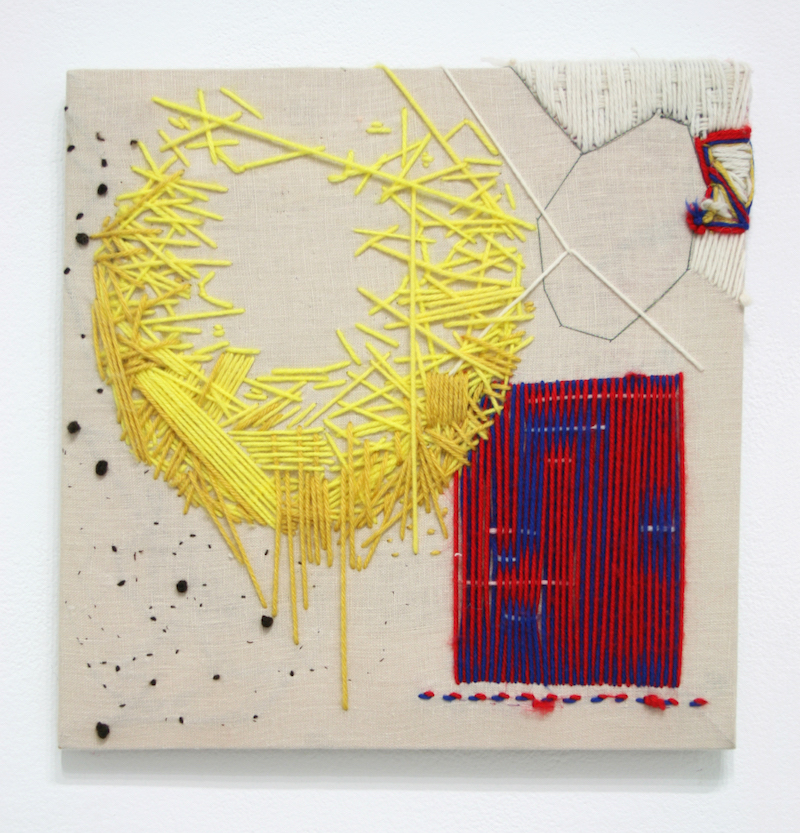
 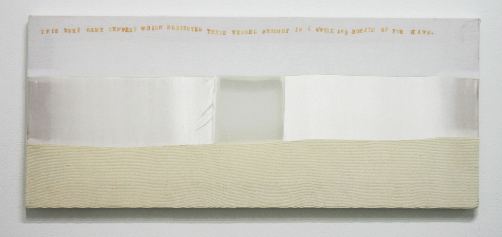
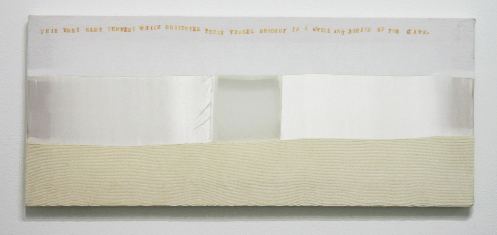